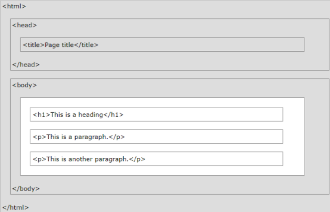

![]()
El presente espacio recopila teoría y explicación de los temas dictados por los docentes en esta respectiva materia.
Va a encontrar en este espacio:
HTML, siglas en inglés de HyperText Markup Language (‘lenguaje de marcado de hipertexto’), hace referencia al lenguaje de marcado para la elaboración de páginas web.
Es un estándar que sirve de referencia del software que conecta con la elaboración de páginas web en sus diferentes versiones, define una estructura básica y un código (denominado código HTML) para la definición de contenido de una página web, como texto, imágenes, videos, juegos, entre otros. Es un estándar a cargo del World Wide Web Consortium (W3C) o Consorcio WWW, organización dedicada a la estandarización de casi todas las tecnologías ligadas a la web, sobre todo en lo referente a su escritura e interpretación. HTML se considera el lenguaje web más importante siendo su invención crucial en la aparición, desarrollo y expansión de la World Wide Web (WWW). Es el estándar que se ha impuesto en la visualización de páginas web y es el que todos los navegadores actuales han adoptado.
Para todas las antes mencionadas vamos a trabajar de la misma manera, con sistema de carpetas y de archivos. Donde nuestro archivos principal, nuestra página inicial, se va llamar “index.html” y después tendremos todo lo demás organizado en carpetas.
Por lo general todas las páginas web que veamos tiene una estructura básica como esta:

Donde vamos a trabajar con 3 campos o contenedores principales: el html, el head (cabecera) y el body (cuerpo).
Aunque luego esto se va complejizar con estructuras como estas:

Este contenedor es el contenedor general del estándar web, el encargado de posicionar la web en un “radar” para que nuestro sitio esté más arriba en los resultados de búsqueda. En este vamos a configurar el lenguaje con el atributo lang= ”idioma”, puede ser español (es), inglés (en), entre otros.
Dentro de este van a estar ubicados el head y el body, la cabecera y el cuerpo del mismo.
Este contenedor es la cabecera de nuestra pagina, acá van a estar todos los datos, metadatos y referencias a otros objetos( archivos java, ajax, css y demás). También tendremos el nombre de nuestra página.

Para cambiarlo vamos a usar la etiqueta
<title>Recibidos (47) - gnrolon@itel.edu.ar </title>
Para poner el logo/ icono de nuestra página lo pondremos así <link rel="shortcut icon" href="img/favicon.png"> y este tiene que ser una imagen de máximo 10px*10px. Para hacer referencia a otro objetos <link rel="stylesheet" href="css/estilos.css"> o tambien <script defer src=''script.js''></script>
.Si se quiere poner el autor o algún metadato relevante se escribe
<meta name="author" content="Gonzalo Nahuel Rolón">.
Ya que todos los procesadores de html funcionan en un inglés genérico van a caracteres que no los pueda procesar, pero para corregir ese “error” vamos a poner esto <meta charset="utf-8" >
Este es nuestro cuerpo, acá va a estar nuestra interfaz gráfica, donde se va a ver todo lo que pongamos en él. Hay muchas etiquetas pero vamos a empezar por las más básicas.
En todas las etiquetas H son requeridas etiquetas de apertura y de cierre, o sea
<h1>hola</h1>
El H1 es una etiqueta que se utiliza para identificar aquellas frases que conforman el título principal de un contenido de una página web. Cabe destacar que cada página de tu website, por ejemplo, cada entrada de blog, debe tener sus propios heading tags (h1, h2, h3, h4) configurados. Particularmente, el H1 debe resumir en una frase todo lo que representa la página.
Tus heading tags H1 deben personalizarse para el contenido de cada página de tu sitio web. Es decir, lo recomendable es que los H1 permitan que los rastreadores conecten con el núcleo central de tu artículo y no, con tu empresa por ejemplo, ya que una práctica errónea también es la de colocar el nombre de la empresa como H1 en todas las entradas de blog o páginas inherentes.
El H2 es una etiqueta que se utiliza para identificar a los subtítulos. Son perfectos para separar contenido y dan un poco más de información a los motores de búsqueda. Deben contener sinónimos o palabras relacionadas con la temática principal de la página web. Sin embargo, lo más importante es que entre todas las páginas del sitio web, las etiquetas de encabezado no se repitan, sean todas diferentes y relevantes al contenido que representan.
Las etiquetas H2 se utilizan para marcar las diferentes secciones de un texto e indicar los subtítulos que tiene el artículo web. Deben cumplir las mismas normas que las existentes para las H1, pero sus palabras clave de contenido deberán referirse al texto que ese subtítulo está desarrollando. Es decir, si un subtítulo de un artículo es ¿Para qué sirve el SEO? entonces en H2 debe tener una palabra clave que conecte con ese subtítulo.
Las etiquetas H3, H4, H5 y H6 representan los subtítulos que se encuentran presentes dentro de H2. Cuando el contenido debe ser muy minucioso y bien explicado, el uso de H3, H4, H5 y H6 es importante para también destacar esos conectores de contenido. A medida que avanza el número de la etiqueta, tendrá menos importancia para el buscador. No obstante, no deja de ser importante saber identificar estas headings en tu contenido y añadirles palabras claves.
Por otro lado, es importante destacar que mientras más subtítulos le añadas a tus entradas de blog, no necesariamente tienes más oportunidades de aparecer entre los primeros lugares de los buscadores. A lo que heading tags (h1, h2, h3,h4) respecta, la calidad tiene más relevancia que la cantidad.
Las etiquetas H3, H4, H5 y H6 representan los subtítulos que se encuentran presentes dentro de H2. Cuando el contenido debe ser muy minucioso y bien explicado, el uso de H3, H4, H5 y H6 es importante para también destacar esos conectores de contenido. A medida que avanza el número de la etiqueta, tendrá menos importancia para el buscador. No obstante, no deja de ser importante saber identificar estas headings en tu contenido y añadirles palabras claves.
Por otro lado, es importante destacar que mientras más subtítulos le añadas a tus entradas de blog, no necesariamente tienes más oportunidades de aparecer entre los primeros lugares de los buscadores. A lo que heading tags (h1, h2, h3,h4) respecta, la calidad tiene más relevancia que la cantidad.
La etiqueta <p> en HTML define un párrafo. Estas tienen etiqueta de apertura y cierre. Por lo tanto, todo lo mencionado en <p> y </p> se trata como un párrafo. La mayoría de los navegadores leen una línea como un párrafo, incluso si no usamos la etiqueta de cierre, es decir, </p>, pero esto puede generar resultados inesperados al momento de la visualización. Entonces, es una buena convención y debemos usar la etiqueta de cierre.
El elemento HTML <hr> representa un cambio de tema entre párrafos (por ejemplo, un cambio de escena en una historia, un cambio de tema en una sección). En versiones previas de HTML representaba una línea horizontal. Aún puede ser representada como una línea horizontal en los navegadores visuales, pero ahora es definida en términos semánticos y no tanto en términos representativos, por tanto para dibujar una línea horizontal se debería usar el CSS apropiado.
Esta etiqueta se escribe así <hr/> (solo tiene una).
El elemento HTML <em> es el apropiado para marcar con énfasis las partes importantes de un texto. El elemento <em> puede ser anidado, con cada nivel de anidamiento indicando un mayor grado de énfasis.
;
Va a ser necesario una etiqueta de apertura y de cierre.
El elemento strong es el apropiado para marcar con especial énfasis las partes más importantes de un texto. A diferencia de <em>, <strong> un énfasis o importancia fuerte. Va a ser necesario una etiqueta de apertura y de cierre.
El elemento HTML <small> hace el tamaño del texto una talla más pequeña (por ejemplo, de largo a mediano, o de pequeño a extra pequeño) que el tamaño mínimo de fuente del navegador. En HTML5, este elemento es re-utilizado para representar comentarios laterales y letra pequeña, incluyendo derechos de autor y texto legal, independientemente de su estilo de presentación.
Va a ser necesario una etiqueta de apertura y de cierre.
Muestra el texto tachado con una línea horizontal. Va a ser necesario una etiqueta de apertura y de cierre.
Marca una referencia a una fuente, o al autor de un texto citado. Va a ser necesario una etiqueta de apertura y de cierre.
El elemento HTML <q> indica que el texto adjunto es una cita corta en línea. La mayoría de los navegadores modernos implementan esto rodeando el texto entre comillas. Este elemento está destinado a citas breves que no requieren saltos de párrafo. Va a ser necesario una etiqueta de apertura y de cierre.
Cita en bloque . Crea citas en bloque, marca las citas a otros autores o documentos. Se utiliza cuando la cita tiene uno o más saltos de líneas. Va a ser necesario una etiqueta de apertura y de cierre.
El elemento HTML <abbr> (o Elemento de Abreviación HTML) representa una abreviación o acrónimo; el atributo opcional title puede ampliar o describir la abreviatura. Si está presente, el atributo title debe contener la descripción completa y nada más. Va a ser necesario una etiqueta de apertura y de cierre.
El elemento i representa texto en un modo o voz diferente, o desplazado de la prosa normal. Este elemento puede ser utilizado para etiquetar denominaciones taxonómicas, términos técnicos, frases idiomáticas de otras lenguas, transliteraciones, ideas, o nombres de navíos en textos occidentales. Muestra el texto marcado con un estilo en cursiva o italica. Va a ser necesario una etiqueta de apertura y de cierre.
b de bold=negrita. Indica que el texto debe ser representado con una variable bold, o negrita, de la tipografía que se esté usando. Va a ser necesario una etiqueta de apertura y de cierre.
La etiqueta u nos permite formatear el texto subrayado. Hay que tener cuidado con esta etiqueta ya que inicialmente los enlaces por defecto aparecen subrayados. La etiqueta <u> se ha redefinido en HTML5, y representa una parte del texto que debe ser diferente del texto normal, como palabras mal escritas o nombres propios en chino. Va a ser necesario una etiqueta de apertura y de cierre
El Elemento HTML Mark <mark> representa un texto marcado o resaltado como referencia o anotación, debido a su relevancia o importancia en un contexto particular. Va a ser necesario una etiqueta de apertura y de cierre
El elemento HTML line break <br> produce un salto de línea en el texto (retorno de carro). Es útil para escribir un poema o una dirección, donde la división de las líneas es significante. No utilices <br> para incrementar el espacio entre líneas de texto; para ello utiliza la propiedad margin de CSS o el elemento <p>. !No tiene etiqueta de cierre, es solo <br>.
Cuando hablamos de listas en HTML, estamos hablando de dos(2) tipos:
- Listas ordenadas;
- Listas desornadas(Listas sin orden).